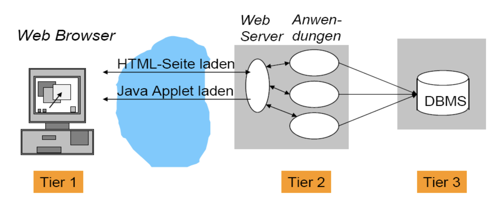
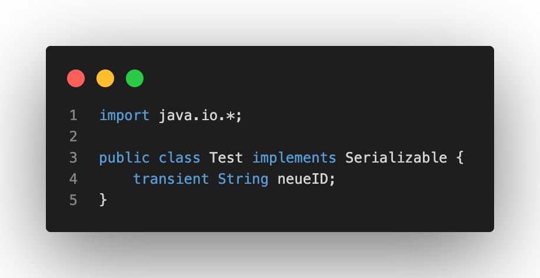

Entwicklung der Kommunikationssysteme
Das erste Thema unseres Moduls des vierten Semesters ist die Entwicklung der Kommunikationssysteme über die Zeit. Dabei sprechen wir vorallem von der Entwicklung der Client-Server-Kommunikation. In den Anfängen bestand das Ethernet physisch aus einem Koax Kabel, über das alle Rechner miteinander in einem LAN verbunden waren. Dies ermöglichte es allen Rechnern Daten zu senden und zu empfangen. Die Umsetzung dabei war, dass ein Computer prüfen (oder auch "lauschen") musste, ob das Kabel frei ist, um etwas senden zu können. Falls ein Senden möglich ist, erhalten dann nach dem Senden alle Computer, die mit diesem Lan verbunden sind, die gesendeten Daten. Dies zeigt das größte Problem dieses Kommunikationsmodells: Es ist keine Sendung an einen spezifischen Computer möglich. Die einzige Möglichkeit herauszustellen für welchen Computer die Nachricht bestimmt ist, ist die MAC-Zieladresse, da diese individuell auf jeder Netzwerkkarte ist.
Ein weiteres Problem war es, dass nur ein Kabel für alle Computer verwendet wurde. Somit kommt es bei zwei zeitgleichen Sendungen zweier Computer zu einer Kollision. In Folge der Kollision konnte dann keiner der beiden Sendungen zugestellt werden. Die Lösung dieses Problems liegt in sogenannten Bridges. Bridges segmentieren die Systeme und können anhand der MAC-Zieladresse erkennen, in welchem Netzwerksegment der Empfänger einer Nachricht liegt und es an diesen gezielt weiterleiten. Während dieses Vorgangs führt die Bridge eine Forwaring-Adresstabelle, in die sie die Absenderadressen mit dem zugehörigen Quellport schreibt. Sendet eine Adresse dann für eine längere Zeitspanne keine Daten mehr, so wird sie aus der Liste entfernt, um die Aktuälität der Liste und Effizienz bereitzustellen.

Heutzutage werden für diesen Anwendungsfall anstatt Bridges Switches verwendet. Diese bieten den Vorteil, dass man bei der Verwendung von Switches mehrere LANs verbinden lassen. Der Vorgang bleibt dabei ähnlich, denn auch Switches nutzen die MAC-Zieladresse, um durch die Mikrosegmentierung Kollsionen zu vermeiden.
Kommunikationsmodell
Client-Sever-Kommunikationsmodell beschreibt den Vorgang eines Austausches zwischen zwei Rechnern beziehungsweise einem (Web-)server. Eine Netwerkverbindung wird dabei mithilfe dieses 5er Tupels beschrieben werden:
- Protokoll (TCP = Transmission Control Protocol)
- Lokaler Host (IP = Internet Protocol)
- Lokaler Prozess (Port)
- Fremder Host (IP = Internet Protocol)
- Fremder Prozess (Port)
In diesem Falle gibt die IP Adresse den "betroffenen" Rechner an und der Port referenziert auf die der Verbindung zugehörigen Anwendung. Abhängig von der Anwendung kann zuätzlich serverseitig eine Datenbankabfrage stattfinden oder andere Anwednungssysteme genutzt werden. Auf Seite des Clients kommt es ebenfalls zur Nutung zuätzlicher Technologien wie zum Beispiel die Verwendung von JS und Frameworks wie jQuery oder Java Applets. Oder auch die Entwicklung von native Apps in beispielsweise SWIFT oder React Native. Eine weitere Technologie, die dabei auch nicht zu vergessen ist, ist das entwicklen von hybriden Apps und Webapplikaltionen.
Java Applets
Java Applets ermöglichen die Ausführung von Java Code im Webbrowser des Clients. Dabei ist eine direkte Interaktion mit dem Nutzer möglich, ohne Daten zum Server senden zu müssen, nachdem sie einmal geladen wurden. Diese Arbeitsweise bezeichnet man als autark. Java Apples haben in den meisten Fällen ein Graphical User Interface (GUI) um die Interkation mit dem Nutzer zu ermöglichen. Die Kommunikation sieht also folgendermaßen aus:

Da Java Applets lokaal ausgeführt werden, bringen sie einige Risiken mit sich. Dabei gibt es verschiedene Sicherheitsvorkehrungen, die den Applets unterliegen, um diese Risiken vorzubeugen:
- Keine Zeiger
- Typsicherheit zur Laufzeit
- Echte Feldgrenzen mit Überprüfung
- Byte Code Verifier kann geladenen Byte Code verifizieren
- Kein Zugriff auf Daten
- Kommunikation nur mit dem Ursprungsrechner des Applets
- Bestimmte Systemparameter können nicht ausgelesen werden
- Applet-Fenster sehen anders aus als normale Fenster
Auch trotz der ganzen Sicherheitsvorkehrungen kommen Java Applets heutzutage nicht mehr zum Einsatz und sind von den meisten Broswern ausgeschaltet, da sie als trotz der Vorkehrungen als unsicher für die heutigen Anforderungen gelten.
Serverseitige Technologien
Die Grundlage serverseitiger Technologien ist die Weitergabe bestimmter Aufgaben etc. an (eine) externe Komponente(n). Der HTTP (Hypertext Transfer Protocol) Request wird dabei ,durch einen indirekten Request durch die URL (Uniform Resource Locator), weitergeleitet. Die externe(n) Komponente(n) regaiert / erzeugt dabei auf / mit einem Response. Die folgende Grafik veranschaulicht dabei die Position des (Web-)Servers:
Die folgenden drei Kapitel: "Common Gateway Interface (CGI)", "Hypertext Protocol (PHP)" und "Java Servlets & Java Server Pages (JSP)" erklären drei serverseitige Technologien aus der Vergangenheit bis Heute detaillierter.
Common Gateway Interface (CGI)
Das CGI wurde 1994/95 entwickelt, da der Abruf statischer Dokumente nicht mehr dem Anspruch der Zeit ausreichte. Mit dem CGI entsand die Möglichkeit Inhalte von Datenbanken anzubinden und Daten, Informationen verschiedener Arten, Bilder und Ähnliches hochzuladen. Um dies zu ermöglichen dürfen die URLs nun nicht mehr auf statische Dokumente, sondern auf Programmme (Applications) führen. Dabei startet und beendet der Webserver die Programme. Zum Datenautausch zwischen Server und CGI Prozzes kommen dabei sogenannte Pipes und Umgebungsvariablen zum Einsatz.
CGIs können dabei mit allen Programmiersprachen erstellt werden, was eine universelle Anwendung dieser Technologie ermöglicht. Im Gegensatz entseteht eine Einschränkung daraus, dass für jeden neuen Aufruf ein neue CGI-URL und ein dazugehöriger Prozess gestartet werden muss. Außerdem erhält ein CGI-Programm nur die Daten und Informationen, die vom Server durchgelassen werden. Der wohl größte Kritikpunkt, der ebenfalls dafür sorgt, dass CGI Programme heutzutage nicht mehr verwendet werden, ist, dass es anonymen Anwendern möglich ist Programme auf dem Server auszuführen und somit Maleware zu verbreiten und das Programm zu beeinflussen oder auch zu beeinträchtigen. Somit scheitert die CGI Technologie schlichtweg an der Sicherheit für den Nuter und das System.
Hypertext Protocol (PHP)
Die Skriptsprache PHP kann direkt in HTML Code eingebunden werden. PHP wird dabei von den meisten World Wide Web (WWW)-Servern unterstützt und ist unter Windows, Linux und MacOS verfügbar. Somit ist es auf allen großen OS (Operating Systems) verfügbar und nutzbar. Drei große Vorteile dieser Technologie sind, dass die Sprache leicht erlernbar ist, sie, wie erwähnt, direkt in HTML Code integriert werden kann und einen großen Funktionsumfang bereitstellt.
Ein PHP-Request beginnt mit dem Anforderungsbefehl für eine Webseite seitens des Nuters (dies passiert über dem Browser auf dem Webserver). Wenn die Datei dabei auf .php, .php3 oder .phtml endet, wird die Anfrage des Nutzers / Clients an PHP-Server weitergeleitet, der die erwarteten / notwendigen Daten aus dem , zum Beispiel, MySQL-Server liest. PHP agiert dabei als Bindeglied zwischen dem MySQL-Server und dem HTML Code und schreibt die entnommenen Daten in den HTML Code, um sie für den Nutzern sichtbar / nutzbar zu machen. Die Daten in / mit dem HTML Code werden dann über den Web-Server an den Browser weitergegeben.

Die PHP-Funktion phpinfo() zeigt alle Umgebungsvariablen an. Die wichtigsten sind dabei:
Java Servlets & Java Server Pages (JSP)
Die Java Servlets basieren auf CGI, sie sind somit eine Erweiterung der zuvor kennengelernten Technologie. Sie bauen, wie der Name verrät, auf der Programmiersprache Java auf. Da dies Bestandteil unserer beiden Programmierungsmodule war, führe ich diesen Punkt nicht weiter aus. Java Servelts werden über die URL angesprochen und sind aus Codesicht zustandslose Java Klassen. Der Web-Server instanziiert die Klassen, führt sie aus und liefert ihnen den notwendigen Inhalt zurück.
JSP stellen dabei Erweiterungen des Java Servelts da. Durch diese wird die Erstellung einfacher Websiten, die sowohl statischen als auch dynamischen Inhalt besitzen, möglich.
Speicherung von Objekten
Objekte oder neu erarbeitet Zustände von vorhandenen Objekten müssen gespeichert werden, damit später darauf zugegriffen werden kann. Zwei Möglichkeiten sind dabei die Verwendung von Serialisierung und Textdateien. Diese beiden Verfahren ermöglichen es Zustände zu speichern, um später darauf zugreifen zu können.
Textdateien
Damit auf eine Datei von einem anderen Programm aus zugegriffen werden kann, müssen die Daten in eine .txt-Datei mit Feldtrennzeichen geschrieben werden. Dafür können unterschiedliche Techniken verwendet werden, wie zum Beispiel in Byte-Form oder normalen Wörtern.
Serialisierung & Deserialisierung
Die Konvertierung eines Objekts in einen Bytestream bezeichnet man als Serialisierung. Den Gegenvorgang, um ein serialisiertes Objekt wieder auslesen zu können, nennt man Deserialisierung.
Serialisierung
Durch das Konvertieren eines Objektes in einen Bytestream, kann das Objekt gespeichert werden oder in eine Datenbank oder Datei übertragen werden. In diesem Vorgang fließen die Datenströme, die als Streams bezeichnet werden, des Ausgangsobjektes auf dem Heapspeicher zu der Datei. In dieser werden die Werte der Instanzvariablen gespeichert.
Streams können in Anschlussströme und Verkettungsströme unterteilt werden. Anschlussströme stellen eine Verbindung zu einer Quelle oder einem Zielort (z.B. Dateien oder Sockets) dar. Verkettungsströme können hingegen selbst keine Verbindung zu einer Quelle oder einem Zielort herstellen. Auf Verkettungsströme kann man nur Methoden aufrufen, weshalb sie immer in Verbindung mit Anschlussströmen stehen müssen.
Ein FileOutputStream stellt einen Anschlussstrom und ein ObjectOutputStream einen Verkettungsstrom dar. Ein Vorteil dabei sind die vielen Kombinationsmöglichkeiten die das Konstrukt der flexibel machen. Zudem ist eine Objektserialisierung in vier Schritten möglich:
Wenn die Instanzvariablen eines zu serialisierenden Objektes nicht nur aus primitiven Datentypen bestehen, sondern auch aus Referenzen auf andere Objekte müssen die einzelnen Objekte ebenfalls serialisiert werden. Bei der Serialisierung wird der gesamte Objektgraph automatisch gespeichert. Serialisierte Objekte haben die Werte ihrer Instanzvariablen und weitere Informationen gespeichert, die für die Wiederherstellung des spezifischen Objektes unabdingbar sind. Dies bringt die Möglichkeit, dass ein identisches Objekt die Werte aufnehmen und das Objekt zurück auf den Heap bringen kann.
implements Serializable, ist ein Kennzeichen, dass es sich um eine Serialisierung handelt. Dieses Kennzeichen muss immer in der Klassendefinition stehen. Damit wird definiert, dass Objekte diesen Types serialisiert werden dürfen. Dies muss ebenfalls, wie oben erläutert, passieren, wenn ein Referenz auf ein anders Objekt besteht. Dabei muss das java.io.* Paket importiert werden, da Serializable ein Teil des Paketes ist. Das Serializable ist dabei ein Marker-/Tag-Interface, da es keine zu implemntierende Methoden enthält. Wenn eine Superklasse eines Objekts Serializable ist, dann sind ebenfalls ihre Subklassen Serializable.
Damit alle Informationen eines Objektes gespeichert werden können, werden refernzierte Objekte im Objektgraph gespeichert. Somit muss nur noch das eigentliche Objekt serialisiert werden. Mit dem Schlüsselwort transient können Instanzvariablen aus dem Obejekt beim Serialisierungprozess übersprungen werden.

Deserialisierung
Die Deserialisierung nutzt man zur Auslesung eines serialisierten Objektes, dabei wird aus einer bestehenden Datei ein neues Objekt erzeugt, das den gleichen Zustand hat, den das serialisierte Objekt zum Zeitpunkt der Serialisierung hatte. Ein einziger Unterschied liegt hierbei in den tranisenten Varibalen, da diese in diesem Falle von Objektreferennzen mit null und im Falle vin primitiven Datentypen mit default-Werten zurückgegeben werden.

FileInputStreams und ObjectOutputStreams sind essentielle Bestandteile der Deserialisierung. Es ergibt sich ein Prozess aus 5 Schritten:
Das Objekt wird also aus dem Storm gelesen und daraufhin klassifiziert. Im Falle, dass die Java Virtual Machine (JVM) keine Klasse finden oder laden kann, wird eine Exception im ObjectOutputStream ausgeschmissen. Eine Exception wird ebenfalls ausgelöst, wenn versucht wird mehr Objekte als vorhanden sind auszulesen. Zur Lösung dieses Problemes kommen häufig Try-Catch-Blöcke zum Einsatz. Die Auslesung mehrerer Objekte folgt dem first in first out (FIFO) -Prinzip.
Übung 1
Unsere erste Übung bezieht sich auf das Thema Serialisierung, das wir in der heutigen Vorlesung besprochen haben. Dabei sind die Klassen Spielfigur und SpielSicherungsTest gegeben. Dazu sollen wir eine neue Klasse namens Team anlegen. Das Team soll dabei, analog zu den bereitgestellten Klassen, die Objektreferenz löschen und das Objekt neu laden. Der Quellcode zu dieser Übung sieht dabei so aus:
String in eine .txt-Datei schreiben
Das Schreiben eines String in eine .txt-Datei funktioniert ähnlich wie das Schreiben eines Objektes. Dies ermöglicht den Datenautausch eines Java-Programmes mit einem Nicht-Java-Programm. Die Instanzvariablen werden dabei in der .txt-Datei, die das Nicht-Java-Programm öffnen kann, festgehalten. Dabei kommt der FileWriter anstelle des ObjectOutputStreams zum Einsatz. Wird auf dem FileWriter die Methode write() aufgerufen, so schreibt dieser die Daten in die angegebene Datei. Der folgende Code veranschaulicht dies:
java.io.File
Die Klasse java.io.File repräsentiert eine Datei, jedoch nicht den Inhalt, auf einem Datenträger. Sie ermöglicht die Weitergabe des Pfades der Datei. Sie kann, da die den Inhalt nicht kennt, auch nicht "schreiben" oder "lesen". Sie kann aber den Dateipfad prüfen:
Wie der Code oben zeigt, stellt die Klasse java.io.File einige Mtehode bereit, die zum Beispiel das Erzeugen, Überprüfen oder Löschen eines File-Objektes ermöglichen.
Puffer
Bei dem Schreiben von Strings in eine Datei auf der Festplatte kann es zu Engpässen bzw. Staus kommen, da jeder String einzeln auf die Datei transportiert werden müsste. Um dieses Problem zu vermeiden, werden Puffer eingebaut, die als Zwischenspeicher dienen. Der Puffer sammelt die Strings (Maximal bis er voll ist) und gibt sie dann gebündelt an den FileWriter weiter. Die Methode flush() kann dabei verwendet werden, um die Daten im Puffer abzusenden, bevor dieser voll ist.
Aus einer .txt-Datei lesen
Zum Auslesen von Text aus Dateien zu lesen werden FileReader und BufferedReader verwendet. Zur anschließenden Ausgabe des Textes wird eine while-Schleife verwendet, die abgebrochen wird, wenn der gesamte Text ausgegeben wurde. Dabei funktioniert der Vorgang wie folgt: Jede Zeile wird einzeln in einen String eingelesen und mit Null verglichen. Wenn die Zeile ungleich Null ist, so wird sie ausgegeben. Fall eine Zeile / ein String gleich Null ist, so wird die while-Schleife beendet.
Reader
Im Folgenden werden die Methoden der Klasse Reader. Im Rahmen der Vorlesung haben wir uns noch Weitere angeschaut, die hier nicht gelistet sind, diese können bei Bedarf in der Dokumentation nachgeschaut werden. Für die Eingabe über Character-Streams stellt die Klasse Reader folgende Methoden:
- public abstract int read(): Liefert das nächste Zeichen aus dem Reader-Objekt als Integer-Wert
- public int read(char[] c): Füllt das Feld mit Zeichen aus dem Reader-Objekt und liefert die Anzahl der gelesenen Zeichen zurück
- public int read(char[] c, int off, int n): Füllt das Feld ab Index of mit den nächsten n Zeichen aus dem Reader-Objekt und liefert die Anzahl der gelesenen Zeichen zurück
- public void close(): Schließt den Strom
Writer
Zur Ausgabe über Character Streams stellt die Klasse Writer folgende Methoden bereit:
- public abstract void write(int c): Schreibt das Zeichen c in das Writer-Objekt
- public void write(char[] c): Schreibt, die im von c referenzierten Feld gespeicherten, Zeichen in das Writer-Objekt
- public void write(char[] c, int off, int n): Schreibt, die im von c referenzierten Feld gespeicherten, n Bytes ab Index of in das Writer-Objekt
- public void write(String s): Schreibt, die im Strings gespeicherten, Zeichen in das Writer-Objekt
- public void write(String s, int off, int n): Schreibt, die im String s gespeicherten, n Zeichen ab Index of in das Writer-Objekt
Hierbei gilt ebefalls, dass weiter Writer und Informationen aus der Dokumentation entnommen werden können.
Übung 2
In der zweiten Übung der heutigen Vorlesung sollen wir eine .txt-Datei anlegen (in meinem Beispiel lesen.txt) und dazu ein passendes Java-Programm verfassen, welches die Datei liest und eine Kopie der Datei (namens lesen_kopie.txt) in das selbe Verzeichnis schreibt. Mein Java-Programm, das die Aufgabe erüllt, sieht folgendermaßen aus: